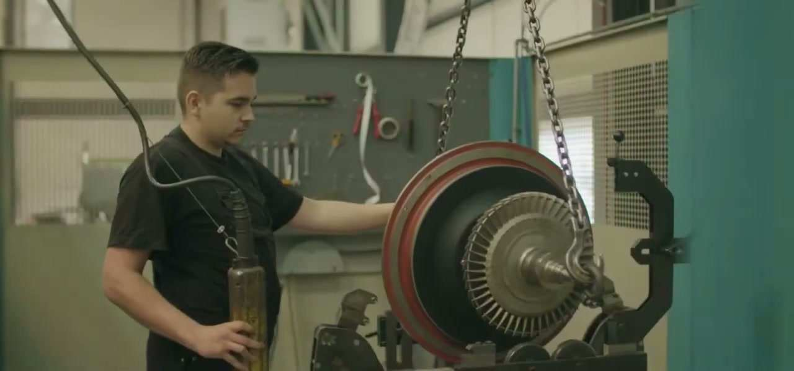
Este é um estudo de mercado. Mede duas coisas com registro público: quem é a empresa holandesa que pretende operar no Brasil e que tamanho tem o mercado brasileiro que ela viria atender, primeiro no país e depois em Pernambuco. Onde o dado não existe, isso está escrito.
Marca oficial da empresa, extraída do site institucional. Navy e laranja são as cores de identidade da Draaijer.
Antes de medir o mercado, é preciso saber o tamanho de quem vem atendê-lo. A ficha abaixo foi levantada na Câmara de Comércio holandesa, no registro mercantil espanhol e na imprensa naval dos Países Baixos. A empresa é real, é técnica e é bem menor do que a narrativa do projeto sugere.
| Registro | Dado verificado | Fonte |
|---|---|---|
| Razão social | Draaijer Turbo Services B.V. | KvK, com "s" no registro e sem "s" na comunicação |
| Número de registro | KvK 51087308 | extração de 25/07/2026, situação ativa |
| Ano de constituição | 2010 | KvK, contra "mais de 35 anos" alegados no material |
| Capital social | EUR 18.000 | KvK |
| Sede | Zernikestraat 25, Dordrecht | KvK e site da empresa |
| Atividade registrada | SBI 33150 e 46649 | reparo de embarcações civis e atacado de máquinas industriais |
| Estrutura | Holding com logística própria | Draaijer Holding B.V. e Draaijer Logistic & Services B.V. |
| Porte estimado do grupo | 15 a 30 pessoas | imprensa naval de 2015, LinkedIn e estimativa de terceiro |
O material apresenta "mais de 35 anos de experiência". A pessoa jurídica é de 2010. A explicação está no próprio registro: a Draaijer opera com o nome fantasia Turboned. A TurboNed foi uma empresa holandesa independente de turbocompressores, fundada em 1986 por Hans Franken, ex-ABB, e falida em 2012.
A leitura justa é que a experiência é da linhagem técnica, e isso tem valor real em um setor onde conhecimento anda com pessoas. Mas não foi encontrado nenhum documento público de aquisição da TurboNed ou de seus ativos. Em um documento de investimento, os 35 anos entram como história, não como ativo.
Oficina completa, com jateamento, solda, usinagem, metrologia e balanceamento certificado em máquina SCHENCK. É o que aparece nos cinco vídeos e é a parte mais sólida de todo o material recebido.
verificado em vídeoDraaijer Turbo Service Spain S.L., constituída em 2018, apresentada como oficina de 600 m² com cobertura de Espanha e Portugal. Dois funcionários registrados em 2024. No ranking setorial espanhol de reparo naval, caiu 82 posições e está em 522º.
encolhendoRegistrada em julho de 2021 na África Ocidental. É o único precedente conhecido de expansão da empresa para fora da Europa, e não há informação pública sobre porte, faturamento ou resultado dessa operação.
sem dado públicoA Espanha é a única expansão europeia da Draaijer com dados financeiros públicos, e ela recuou em todas as linhas em 2024. Vendas caíram 24,9%, patrimônio líquido 29,3%, ativo total 47,2% e o retorno sobre patrimônio 53,7%.
Isso não desqualifica a empresa. Uma unidade pequena em mercado maduro pode encolher por muitos motivos. Mas é o único histórico verificável de como esta empresa se comporta ao abrir operação fora da sede, e ele precisa estar na mesa de quem avalia uma entrada no Brasil de porte muito maior.
Some-se a isso o que não foi encontrado em canal nenhum: nenhuma ISO 9001 e nenhuma aprovação como fornecedor de serviço por DNV, ABS, Bureau Veritas, Lloyd's Register, RINA ou ClassNK. Em reparo naval, essa credencial é o que abre a porta do armador.
O produto aparente é reparo de equipamento. O produto real é disponibilidade do ativo do cliente. Quem só conserta compete por preço de hora; quem garante retorno ao ar em prazo curto compete por confiança e vende contrato. É esse o negócio que a empresa opera na Europa, e é por isso que estoque próprio, logística própria e prontidão aparecem com tanto destaque na comunicação dela.
Reproduzir isso no Brasil não depende de metros quadrados. Depende de três coisas que o material recebido não resolve: estoque rotativo de unidades de intercâmbio, que é capital de giro imobilizado e a verdadeira barreira de entrada do setor; credencial de classificadora, sem a qual o segmento naval fica fechado; e tempo de resposta local, que é pessoa em plantão, não galpão.
A Draaijer não é um grupo com conselho e acionistas dispersos. É um negócio familiar holandês, fundado por uma pessoa que veio do chão de fábrica do concorrente. Tudo abaixo está em registro da Câmara de Comércio dos Países Baixos, no registro mercantil espanhol ou na imprensa naval holandesa.
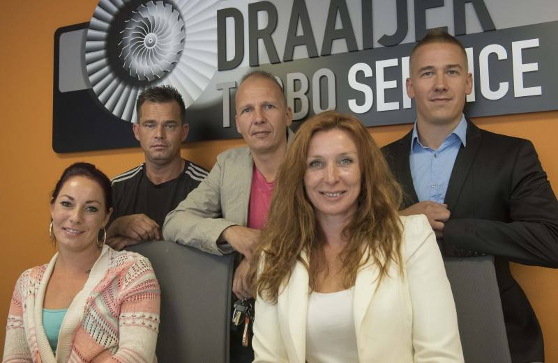
Fundou a Draaijer Turbo Services B.V. em 2010, em Dordrecht. Antes disso trabalhou na TurboNed, em Zwijndrecht.
A reportagem da Schuttevaer de 2015 é a fonte mais direta sobre a origem do negócio. Registra que Rogier Draaijer trabalhava na TurboNed e inicialmente quis comprar aquela empresa. A compra não se concretizou e ele abriu a própria em 2010. A TurboNed havia sido fundada em 1986 por Hans Franken, ex-ABB, e veio a falir em 2012.
A mesma reportagem resume a filosofia da casa em uma frase que vale mais que qualquer apresentação: não gastar dinheiro que não se tem, arregaçar as mangas e estar disponível dia e noite para o cliente. Com isso a empresa atravessou a crise e cresceu de uma pessoa para cerca de vinte e cinco em cinco anos.
Sobre a imagem: a foto ao lado é o único registro fotográfico público encontrado da família à frente da empresa. A legenda original não identifica quem é quem, e por isso nenhum dos cinco é nomeado aqui. O site institucional não mantém página de equipe com retratos, a galeria oficial mostra as pessoas sempre de costas ou com equipamento de proteção, e não foi localizado perfil pessoal público do fundador.
| Entidade | Registro | Papel na estrutura | Situação |
|---|---|---|---|
| Draaijer Turbo Services B.V.Zernikestraat 25, Dordrecht · fundada em 2010 | KvK 51087308 | operação principal, a oficina | ativa em 25/07/2026 |
| Draaijer Holding B.V. | KvK 65803663 | controladora do grupo | ativa |
| Draaijer Beheer B.V. | pessoa jurídica | diretor estatutário | ativa |
| Draaijer Logistic & Services B.V.confirma a alegação de transporte próprio do grupo | KvK 65805321 | logística e transporte | ativa |
| Draaijer Turbo Service Spain S.L.Vila-Seca, Tarragona · constituída em 06/06/2018 | CIF B55732002 | subsidiária, sócio pessoa física holandesa | ativa, em retração |
| Draaijer Turbo Service Central AfricaDouala, Camarões · registrada em 09/07/2021 | RC/DLA/2021/B/4626 | subsidiária | sem dado público de porte |
| Nome fantasia Turboned | registrado no KvK | marca herdada da linhagem técnica | em uso |
A página About us, atualizada em 2 de abril de 2026, diz duas coisas diferentes em parágrafos vizinhos: "Founded in 2010, we bring more than 15 years of turbocharger experience" e, sobre a equipe técnica, "with more than 35 years of experience, our engineers".
São duas afirmações corretas e distintas: quinze anos de empresa e mais de trinta e cinco anos de bancada acumulados pelos engenheiros. A confusão entre uma coisa e outra não nasce no site da Draaijer.
A alegação de manter o maior estoque de peças de turbocompressor da Europa aparece apenas no próprio site, no material da agência contratada e em anúncios pagos. Nenhuma corroboração independente, nenhum número de itens, nenhuma metragem de armazém, nenhum comparativo.
Estoque é a barreira de entrada real deste setor, e por isso a afirmação importa. Enquanto não houver inventário auditável, ela entra como posicionamento de marketing, não como ativo em documento de investimento.
Oficina completa e verificada em vídeo: jateamento em cabine, solda TIG, usinagem em CNC, metrologia com relógio comparador e balanceamento em máquina SCHENCK com relatório impresso por rotor.
A imprensa setorial registrou em 2016 a compra de um centro CNC de torneamento e fresamento, com a justificativa de sustentar o serviço 24 horas. É investimento em máquina, não em comunicação.
verificado em vídeo e em imprensaConstituída em 2018, apresentada como oficina de 600 m² cobrindo Espanha e Portugal. O registro oficial mostra dois funcionários em 2024 e capital social de EUR 4.500, com sócio pessoa física holandesa.
No ranking setorial espanhol de reparo naval caiu 82 posições, para o 522º lugar. A empresa anunciou formalmente a abertura de oficina em Málaga, a 900 km de Tarragona, dentro do mesmo país.
único braço com número público, e ele encolheRegistrada em julho de 2021 na África Ocidental. É o único precedente conhecido de expansão do grupo para fora da Europa e, portanto, o paralelo mais próximo de uma entrada no Brasil.
Não há informação pública sobre porte, faturamento, número de pessoas ou resultado. Perguntar como Douala se comportou nos primeiros cinco anos é a diligência mais barata e mais reveladora disponível.
sem dado públicoA Espanha é a única unidade fora da sede com demonstrativo público, e ela recuou em todas as linhas em 2024: vendas 24,9%, patrimônio líquido 29,3%, ativo total 47,2% e o retorno sobre patrimônio 53,7%.
Isso não desqualifica a empresa. Uma unidade pequena em mercado maduro encolhe por muitos motivos, e dois funcionários fazem qualquer indicador oscilar com violência. Mas é o único registro disponível de como este grupo se comporta ao abrir operação em outro país, e ele precisa estar na mesa de quem avalia uma entrada no Brasil de porte muito maior.
Some-se o que não foi encontrado em canal nenhum, nem no site, nem no LinkedIn, nem em anúncio, nem em listagem de feira: nenhuma ISO 9001 e nenhuma aprovação como fornecedor de serviço por DNV, ABS, Bureau Veritas, Lloyd's Register, RINA ou ClassNK.
Balanceamento é o limite físico de uma oficina de turbocompressores: define qual rotor entra na máquina e qual não entra. É o dado que quase ninguém publica, e a Draaijer publica.
A barra da Draaijer é a menor do grupo e para muito antes da linha tracejada. Turbo 10 balanceia dez vezes mais com dez funcionários, o que mostra que o limite não é porte de empresa, é máquina instalada.
| Modelo ABB | Peso do rotor | Onde aparece na carteira |
|---|---|---|
| TPL65 | 885 kg | Refrescos e Coca-Cola |
| TPL69 | 1.558 kg | Coca-Cola e Borborema |
| TPL73 | 2.310 kg | não mapeado |
| TPL77 | 3.511 kg | Termocabo, Petrolina e Manauara |
| TPL80 | 5.352 kg | não mapeado |
Balanceia-se o rotor, não a unidade montada. Um turbocompressor de 3,5 toneladas tem rotor bem mais leve que o conjunto, então 500 kg não é automaticamente insuficiente e este documento não afirma isso.
O que se afirma é o que a comparação mostra: todo concorrente posicionado para geração de energia publica de 2.000 a 5.000 kg, e a diferença de um para dez em relação ao maior deles é grande demais para ficar sem explicação num projeto que promete atender equipamentos de até 25 toneladas.
É uma pergunta de uma linha para a matriz em Dordrecht, e a resposta muda o dimensionamento inteiro.
| Empresa | País | Desde | Pessoas | Faturamento |
|---|---|---|---|---|
| TSI Turbo Service Internationalcontas auditadas na Companies House | Reino Unido | 1989 | 51 | GBP 19,0 mi |
| PJ Circular Engineering | Dinamarca | 1979 | 37 | EUR 9,6 mi |
| Turbomed S.A. | Grécia | 1976 | ≈ 35 | não divulgado |
| Draaijer Turbo Servicesoficina de 600 m² | Países Baixos | 2010 | 15 a 30 | não divulgado |
| Marine Turbo Engineeringquatro aprovações de classificadora | Reino Unido | 1970 | 17 | não divulgado |
| Turbo Belgium | Bélgica | 2008 | 5 a 9 | EUR 1,2 mi de margem |
| Turbo Polandreceita caiu de PLN 2,23 mi em 2023 | Polônia | 2006 | 1 | PLN 32 mil |
| TurboNedfaliu em 2012, origem técnica da Draaijer | Países Baixos | 1986 | 80 | faliu |
A TurboNed tinha 80 funcionários, era a referência de escala máxima do setor holandês, e não sobreviveu a 2012. É de onde vem a linhagem técnica da Draaijer. Um projeto que se propõe a montar do zero, em mercado novo, uma operação maior do que aquela, precisa explicar por que teria destino diferente. Nenhum documento do projeto menciona a TurboNed.
Todas da galeria oficial em draaijerturboservice.nl. Servem de verificação do que a empresa mostra de si mesma ao mercado, e do padrão de apresentação que ela mantém.
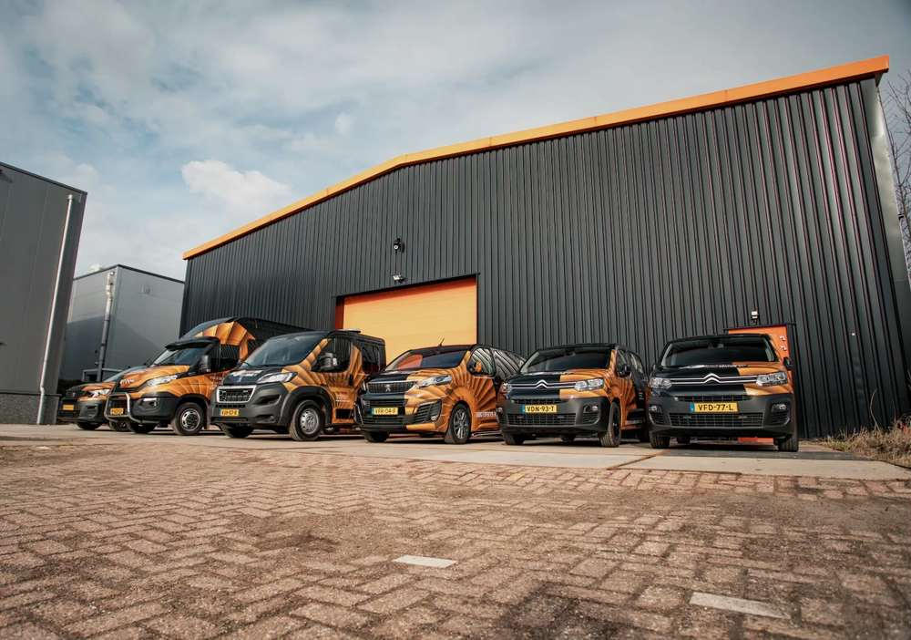
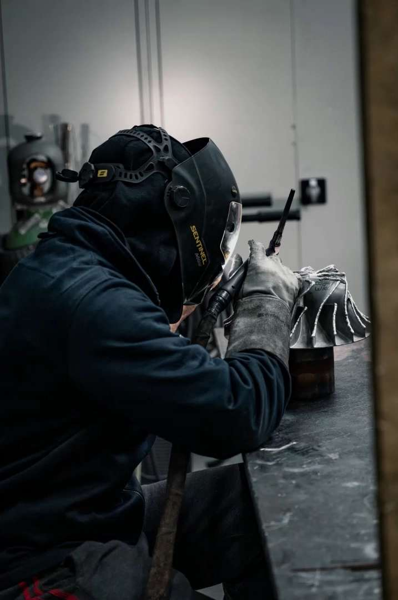
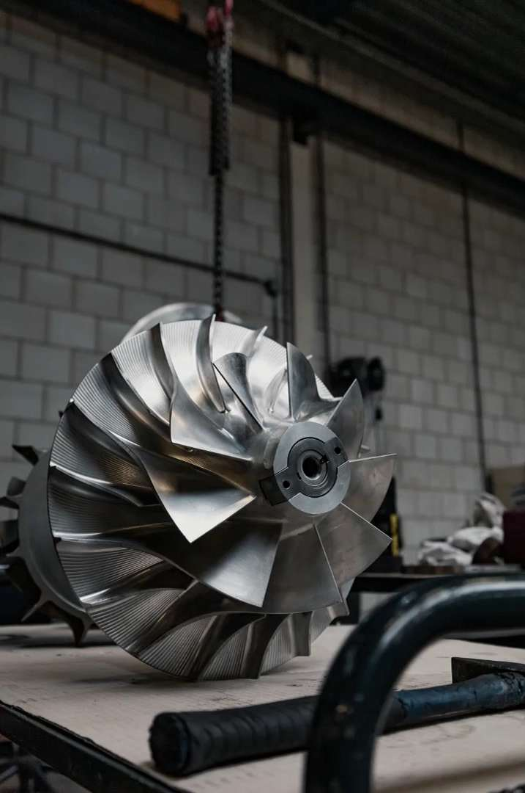
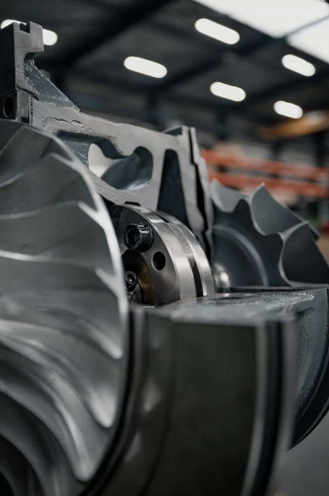
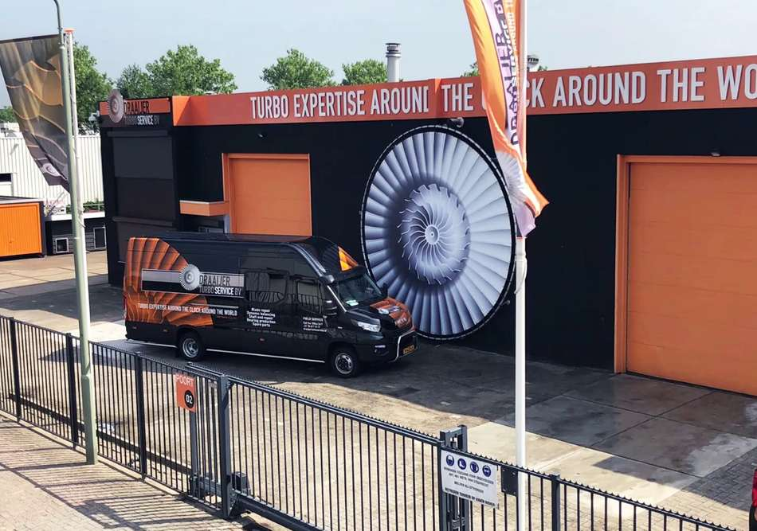
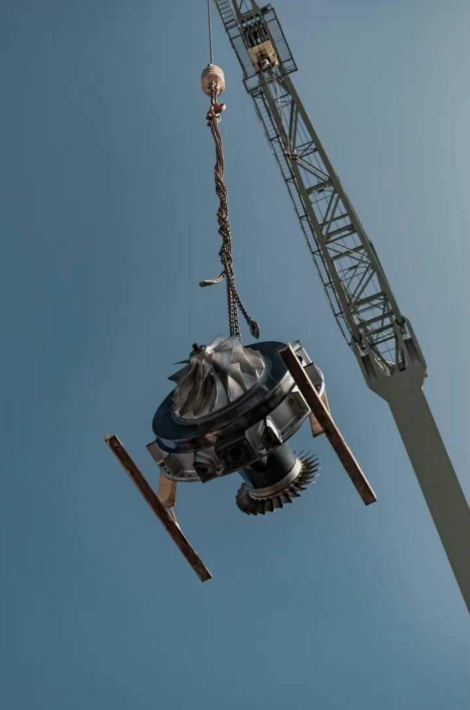
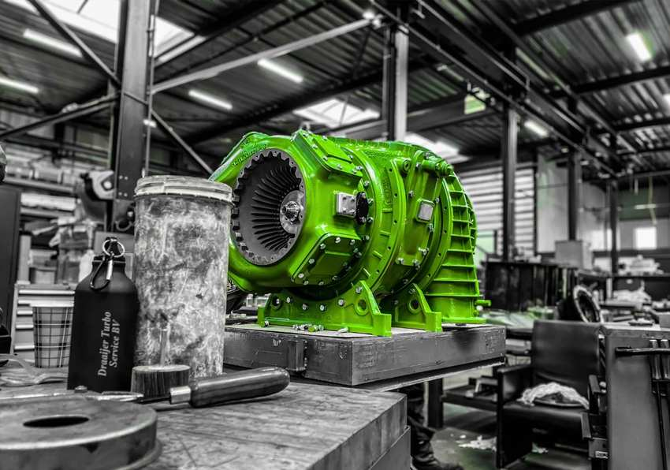
Embarcações de navegação interior e de longo curso. É a atividade registrada na Câmara de Comércio, SBI 33150.
Unidades operando em condição severa, com exigência de resposta rápida e trabalho embarcado.
O segmento que o projeto brasileiro elege como âncora, e o que este estudo mede em detalhe adiante.
Ferroviário e aplicações pesadas. Não aparece em nenhum documento do projeto brasileiro.
A Draaijer se declara Mentor Company, em parceria com escolas técnicas para formar a próxima geração de técnicos. Nos Países Baixos esse reconhecimento é concedido por órgão setorial e implica auditoria de estrutura e de acompanhamento de aprendiz. É a única credencial institucional encontrada em toda a apuração, e ela é sobre formação, não sobre qualidade de produto.
Não foi localizado processo, pedido de falência ou nomeação de curador para a Draaijer Turbo Services nem para as demais empresas do grupo. A ressalva pesa: decisões judiciais holandesas publicadas são anonimizadas por padrão quando envolvem pessoa física, então a ausência de achado ali vale menos do que valeria no Brasil. A empresa consta como ativa na extração de 25 de julho de 2026.
Uma empresa familiar de quinze anos, com quinze a trinta pessoas, oficina própria e equipada, logística própria, quatro unidades em três países, formação de aprendizes reconhecida e um fundador que aprendeu o ofício dentro do concorrente que faliu. Isso é substância real e não deve ser diminuído.
Ao mesmo tempo: capital social de dezoito mil euros, balanço da matriz fechado ao público, única filial com número aberto encolhendo em todas as linhas, nenhuma certificação de sistema de gestão e nenhuma aprovação de classificadora. É uma boa oficina de porte pequeno, e não um grupo industrial com capacidade de bancar uma operação de dezenas de milhões de reais em outro continente. A diferença entre essas duas leituras é o que decide como o negócio deve ser estruturado.
Jateamento em cabine, traje pressurizado, componente de turbina. Este e os outros trechos de vídeo deste documento vêm do material enviado pela própria Draaijer. Rodam sem som e escurecidos porque servem de evidência, não de trilha. A capacidade técnica não é a pergunta deste documento. O tamanho do mercado é.
O Operador Nacional do Sistema publica a capacidade instalada do Sistema Interligado Nacional e a projeção até 2030. Em julho de 2026 o Brasil tem 253.061 MW instalados. A fatia de térmica a óleo e diesel, que é onde vivem os motores alternativos com turbocompressor de grande porte, são 2.041 MW.
O mesmo documento projeta dezembro de 2030. Térmica a óleo e diesel cai de 2.041 MW para 1.407 MW. São 634 MW a menos, uma retração de 31,1% em quatro anos e meio. No mesmo período, térmica a gás sobe de 17.441 MW para 26.270 MW, uma expansão de 50,6%.
Nenhuma outra fonte da matriz encolhe tanto em proporção, exceto carvão, que perde 25,2%. A curva do segmento alvo é de descida, e ela está publicada pelo operador do sistema, não estimada por consultoria.
Em três dias de março o Brasil contratou a maior quantidade de potência elétrica da sua história. Foram dois certames seguidos, com resultados homologados pela ANEEL em 9 de junho de 2026. É a fotografia mais nítida disponível de para onde o dinheiro do setor está indo, e é anterior à montagem da proposta.
contratados em 100 usinas a gás natural, carvão mineral e ampliação de hidrelétricas. R$ 515,7 bilhões de receita total, R$ 64,5 bilhões em investimento, deságio de 5,52%. Suprimento de 2026 a 2031.
contratados em 6 usinas a óleo diesel, óleo combustível e biodiesel. R$ 979 milhões de custo total, deságio de 50,14%. Contratos de 2026 a 2030.
Óleo combustível, que é o combustível das plantas âncora do projeto, ficou com 20 MW. Contra 15,2 GW contratados em 92 usinas a gás natural no certame de dois dias antes. A proporção é de 1 para 760.
Nove em cada dez megawatts oferecidos ficaram de fora. O deságio médio foi de 50,14%, o que mostra o quanto os proponentes tiveram que ceder para caber no pouco que havia.
Trinta e oito projetos se inscreveram no leilão do óleo, somando 5.890 MW. Foram contratados 501,3 MW. Nove em cada dez megawatts oferecidos ficaram de fora, e o deságio médio de 50,14% mostra o quanto os proponentes tiveram que ceder para caber no que sobrou.
Dos seis vencedores, dois estão em Pernambuco, ambos em Petrolina, e um deles é a biodiesel. A Petrobras levou a Termoceará, a diesel, no Porto do Pecém. Nenhum vencedor está em Suape.
| Produto contratado | Preço por MW-ano | Prazo | Início do suprimento |
|---|---|---|---|
| Óleo combustível e diesel, rodada 1 | R$ 899,65 mil | 3 anos | 01/08/2026 |
| Óleo combustível e diesel, rodada 2 | R$ 860,80 mil | 3 anos | 01/08/2027 |
| Biodieselteto do leilão era R$ 1,75 milhão por MW-ano | R$ 787,15 mil | 10 anos | 01/08/2030 |
Turbocompressor é peça de motor alternativo. Se a usina troca óleo por etanol, biodiesel ou gás e mantém o motor, o turbo continua existindo e continua precisando de overhaul. Se troca o motor por turbina a gás, o turbo desaparece com ele. Essa diferença define se há mercado depois de 2030, e é uma distinção que o projeto ainda não incorporou.
A UTE Suape II opera desde 2013 no Complexo de Suape com 381 MW a diesel. É a maior termelétrica a óleo do país. Pertence à Suape Energia, controlada pela Savana Holding com 80% e pela Petrobras com 20%, em parceria técnica com a Wärtsilä.
A empresa investiu R$ 60 milhões para rodar um motor com 100% de etanol, tecnologia desenvolvida com a Wärtsilä a partir de plataformas de metanol e amônia. Segundo o CTO da companhia, José Faustino, é o primeiro teste do mundo. A eficiência térmica medida ficou entre 43% e 44%, ligeiramente abaixo do diesel, e a usina atinge carga plena em cerca de 30 minutos, metade do tempo de uma térmica convencional a óleo.
O motor continua sendo motor. Continua tendo turbocompressor, continua precisando de balanceamento, de solda de roda, de metrologia. A base instalada de turbos não evapora com a descarbonização do combustível: ela muda de dieta.
No mesmo leilão de março, a Suape Energia também arrematou uma térmica nova de 119 MW a gás natural. Ali a pergunta muda: motor a gás mantém o turbo, turbina a gás não tem turbo nenhum. Esse dado não é público por usina e é a maior incerteza técnica deste documento. Está registrado como incerteza, não preenchido por estimativa.
Dos 15,2 GW a gás contratados em março, quanto é motor alternativo e quanto é turbina? Se for majoritariamente turbina, o mercado de turbocompressor no Brasil está estruturalmente condenado a encolher junto com o óleo. Se houver fração relevante de motor, existe substituição de base. É a primeira verificação que este estudo recomenda.
A leitura é desconfortável para quem quer crescer descobrindo cliente novo em geração. Se a estimativa está na ordem certa, a base já mapeada cobre cerca de 72% do universo plausível. O trabalho de prospecção que falta não é encontrar mais usinas, é qualificar as que já estão na lista. E a fronteira real de crescimento está fora da geração.
O estado concentra a maior térmica a óleo do país, um porto que cresce 25,6% ao ano, uma refinaria, um estaleiro e um terminal de gás natural liquefeito entrando em operação. Tudo isso num raio de 60 km do terreno proposto. É aqui que o mandato ganha ou perde sentido.
No 2º LRCAP, Pernambuco arrematou sete projetos de geração somando R$ 4,5 bilhões em investimento. Entre eles a térmica Frevo, da OnCorp, em Suape, movida a gás natural, com cerca de 20 MW e R$ 103 milhões. A mesma OnCorp implanta o terminal de regaseificação de GNL no Porto de Suape, que abastecerá 11 térmicas entre o Ceará e o Espírito Santo.
| Ativo em Pernambuco | Potência | Combustível | Situação em julho de 2026 |
|---|---|---|---|
| UTE Suape IIIpojuca · Savana 80% e Petrobras 20% · O&M com a Wärtsilä | 381 MW | diesel | maior térmica a óleo do Brasil, em conversão parcial |
| Motor a etanol da Suape IItecnologia desenvolvida com a Wärtsilä | 4 MW | etanol | operação assistida desde abril de 2026, escalável a 200 MW |
| Térmica nova da Suape Energiaarrematada no 2º LRCAP | 119 MW | gás natural | contratada, tecnologia do conjunto não divulgada |
| UTE FrevoOnCorp · Suape · R$ 103 milhões | ≈ 20 MW | gás natural | contratada no 2º LRCAP |
| Terminal de regaseificação de GNLOnCorp · Porto de Suape | infraestrutura | GNL | previsto para operar entre o fim de 2026 e 2027 |
| TermocaboCabo de Santo Agostinho · 6 turbos na base de leads | não confirmada | óleo | PPA vencido em 2025, status atual desconhecido |
| Duas térmicas em Petrolinavencedoras do 3º LRCAP, uma delas a biodiesel | não divulgada | diesel e biodiesel | contratadas em março de 2026 |
Com 48 meses de implantação a partir de uma decisão tomada hoje, a unidade entraria em operação em 2030, no ponto mais baixo da curva do segmento que ela foi desenhada para atender.
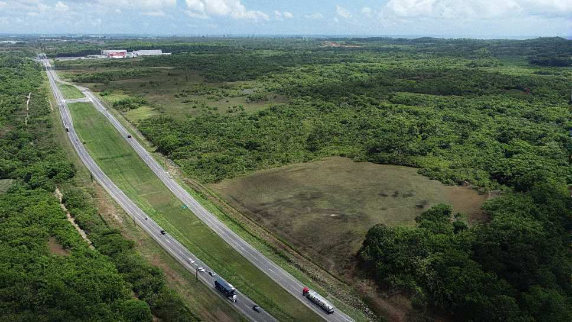
O gás está chegando e o óleo está saindo. Um terminal de regaseificação em Suape muda o custo relativo do combustível para toda planta térmica num raio logístico curto. Quem hoje queima óleo passa a ter alternativa mais barata e menos poluente na porta.
Para uma oficina de turbocompressores isso não é necessariamente ruim, e é aqui que a análise precisa ser precisa em vez de alarmista: depende inteiramente de a conversão manter motor ou trocar por turbina. A Suape II já respondeu por si: manteve motor e trocou o combustível. Se esse for o padrão da região, a base de turbos se preserva. Se o padrão for turbina, ela desaparece em uma década.
Os números do mercado já estão na mesa. O que segue é o cruzamento deles com o que o memorial e o modelo financeiro afirmam. Cada linha tem fonte dos dois lados, e três delas não sobrevivem ao encontro com o registro público.
O projeto é internamente coerente: memorial, modelo financeiro e listas de prospecção contam a mesma história. Os seis pontos abaixo são de outra natureza. Aparecem apenas quando o material é confrontado com o dado público de mercado, que não estava disponível a quem montou a proposta.
O memorial fala em "demanda crescente por manutenção de ativos críticos" e projeta receita de R$ 25 a 45 milhões por ano a partir do terceiro ano.
Memorial descritivo, seção 5.1Térmica a óleo e diesel cai de 2.041 MW para 1.407 MW. É a maior retração proporcional da matriz brasileira, e está no documento oficial de planejamento.
ONS, Programa Mensal de Operação de julho de 2026O argumento comercial central é que térmica de reserva ganha importância com a expansão de renováveis intermitentes, o que aumentaria a demanda por disponibilidade.
Memorial descritivo, seções 1 e 5Foi tudo o que óleo combustível levou no maior ciclo de contratação de potência da história do país. Gás natural levou 15,2 GW. Proporção de 1 para 760.
CCEE e ANEEL, 3º LRCAP homologado em 09/06/2026O modelo projeta gasto anual por turbocompressor constante ao longo de todo o horizonte, sem prazo final de contrato do cliente.
ROI Draaijer, aba Plant EconomicsÓleo e diesel receberam contratos de três anos, com início em agosto de 2026 e agosto de 2027. Biodiesel recebeu dez anos. Gás vai até 2031.
CCEE, 3º LRCAPMapeamento cuidadoso de plantas térmicas e industriais, com contagem de motores e turbocompressores por unidade e nível de confiança declarado por linha.
Lista de prospecção do próprio projetoEstaleiros, rebocadores e terminais aparecem como nomes de empresa. Nenhum equipamento embarcado foi contado, num porto com 832 atracações por semestre.
Arquivo OPERATIVA, cruzado com dados da ANTAQNenhum documento do projeto distingue motor alternativo de turbina a gás, embora essa seja a única variável que determina se existe turbocompressor a reparar.
Leitura integral dos onze documentos recebidosÉ a potência a gás contratada em março de 2026. Se for majoritariamente turbina, a expansão do gás não gera um único turbocompressor novo no Brasil.
CCEE, 2º LRCAPA leitura apressada dos números do ONS sugere que a descarbonização elimina a base instalada de motores e com ela o mercado de turbocompressores.
Projeção ONS 2030A Suape II investiu R$ 60 milhões para rodar 100% etanol no mesmo tipo de motor, com a Wärtsilä. O turbocompressor segue lá, e o serviço também.
Suape Energia, entrevista à agência eixos em 16/04/2026A leitura fria do mercado leva a uma conclusão que não é a do memorial e também não é a rejeição pura e simples. Existe negócio no Brasil para a Draaijer. Ele é muito menor do que o proposto e é de outra natureza.
| Passo do cálculo | Valor | Origem |
|---|---|---|
| Gasto anual de referência por turbocompressor | US$ 76.250 | modelo financeiro do próprio projeto |
| Turbocompressores mapeados no Brasil inteiro | 131 | base de leads do próprio projeto |
| Mercado anual total do universo mapeado | US$ 9,99 mi | multiplicação direta |
| Captura plausível de entrante sem certificação de classificadora, ano 1 | 3% a 8% | faixa arbitrada, sinalizada como premissa |
| Receita anual plausível no ano 1 | US$ 0,3 a 0,8 mi | R$ 1,6 a 4,4 milhões |
| Margem bruta média ponderada das quatro linhas de serviço | 38% | aba Service Mix do modelo |
| Margem bruta anual no ano 1 | R$ 0,6 a 1,7 mi | antes de despesa fixa |
| CAPEX proposto no memorial | R$ 45 a 65 mi | memorial descritivo, seção 5.1 |
A hipótese a ser testada é sempre a mesma: existe cliente brasileiro disposto a pagar prêmio por disponibilidade de turbocompressor a um prestador sem certificação de classificadora e sem histórico local?
Um mandato de representação testa isso em nove meses, com custo de escritório, dois técnicos e passagem aérea. Se a resposta for sim, o estoque de intercâmbio vem depois e a oficina vem por último, financiada pela receita que a hipótese confirmada gerou.
A unidade industrial de R$ 65 milhões inverte a ordem inteira. Constrói primeiro e pergunta depois, num mercado que o operador do sistema projeta encolher 31% no mesmo prazo da obra.
A Draaijer nomeia um representante formal no Brasil, que monta operação de dois técnicos com estoque consignado e ataca emergência e engenharia, as duas linhas de maior margem e menor CAPEX.
Precisa ser verdade: carta de nomeação emitida pela matriz em Dordrecht, e pelo menos um cliente âncora com contrato assinado antes de qualquer obra.
Antes de decidir qualquer coisa, faz-se o inventário de turbocompressores embarcados que passam por Suape. O resultado redefine o tamanho do mercado para cima ou confirma que ele não existe.
Precisa ser verdade: nada. É a única ação deste documento que não depende de premissa nenhuma e pode começar amanhã.
Segue-se o memorial: 7.000 m², R$ 45 a 65 milhões, 48 meses, capacidade de 120 a 180 turbocompressores por ano contra demanda natural mapeada de cerca de 44.
Precisa ser verdade: que o mercado naval não contado seja várias vezes o de geração, que a expansão a gás seja em motor, e que a estrutura de funding, ainda não descrita no material, esteja disponível.
A Draaijer tem oficina real, processo filmado, balanceamento certificado e capacidade de campo embarcada. A Suape II provou que a base instalada de motores sobrevive à descarbonização trocando de combustível. O porto de Suape cresce dois dígitos ao ano. Existe substância nos três pilares.
O que não existe é ponte aritmética entre essa substância e um investimento de R$ 65 milhões. O segmento alvo em geração é 0,8% da matriz brasileira, encolhe 31% até 2030, levou 20 MW no maior leilão da história e oferece ao cliente contratos de três anos. O universo mapeado inteiro movimenta cerca de US$ 10 milhões por ano em manutenção, e um entrante sem certificação captura uma fração de um dígito disso no primeiro ano.
O que estes números pedem é um representante, não uma fábrica. E pedem, antes de tudo, a contagem que ninguém fez: quantos turbocompressores embarcados passam por Suape em um ano. Enquanto essa pergunta estiver sem resposta, qualquer número de receita neste projeto é opinião com aparência de planilha.
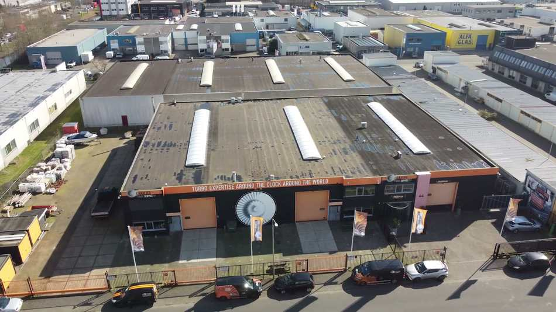
Operador Nacional do Sistema Elétrico, O Sistema em Números, Programa Mensal de Operação de julho de 2026. Câmara de Comercialização de Energia Elétrica, resultados do 2º e do 3º Leilão de Reserva de Capacidade de 2026, de 18 e 20 de março de 2026. ANEEL, homologação e adjudicação dos dois certames em 9 de junho de 2026. Complexo Industrial Portuário de Suape, dados operacionais do primeiro semestre de 2026 reportados à ANTAQ. Agência eixos, entrevista com o CTO da Suape Energia em 16 de abril de 2026. Movimento Econômico, cobertura do 3º LRCAP em 20 de março de 2026.
Os documentos do projeto, o modelo financeiro e os cinco vídeos da operação holandesa estão citados por seção e por aba de planilha ao longo do texto.
Não foi possível determinar quanto dos 15,2 GW a gás contratados em março corresponde a motor alternativo e quanto a turbina a gás. Esse dado não é publicado de forma agregada e é a maior incerteza técnica deste documento.
A estimativa de 182 turbocompressores no parque a óleo e diesel do SIN é derivada de uma única densidade observada, a da Suape II, e deve ser lida como ordem de grandeza, não como contagem.
A faixa de captura de 3% a 8% no primeiro ano é premissa arbitrada por esta análise e está sinalizada como tal na tabela. Nenhuma outra linha do cálculo é estimada.
Estudo de mercado independente sobre o setor de turbocompressores no Brasil e em Pernambuco, e sobre o perfil da empresa estrangeira envolvida. Não constitui aconselhamento de investimento nem parecer jurídico. As conclusões de risco exigem revisão por advogado nas especialidades apontadas. 28 de julho de 2026.